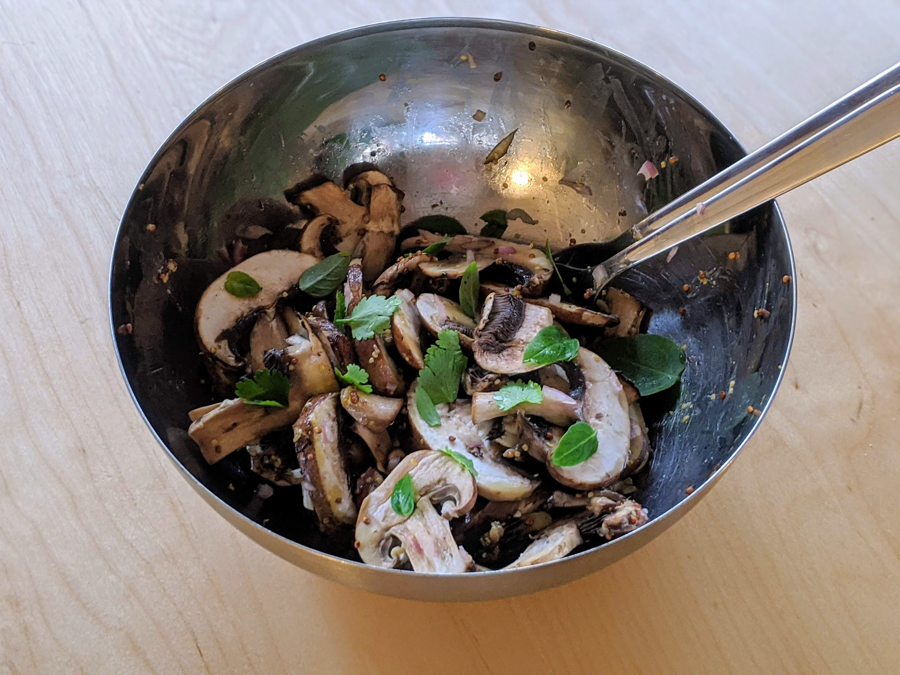

Salade de champignons

Pour 4-5 personnes :
- 750g de champignons de Paris frais (c'est important)
- 6-7 cuillères à soupe d'huile d'olive
- 2 cuillères à soupe de vinaigre de cidre (ou de vin)
- Une cuillère à soupe de moutarde, préférablement à l'ancienne
- (Facultatif) Une cuillère à soupe de vin blanc
- Une grosse échalote
- Une gousse d'ail
- (Facultatif) Une grosse cuillère à soupe de basilic
- Une grosse cuillère à soupe de persil
- Sel, poivre
- Laver les champignons à l'eau froide. Les secouer pour enlever l'eau sous le chapeau, et les laisser sécher un peu (ou les sécher avec du papier absorbant, si on est pressé).
- Éplucher et couper l'échalote et l'ail en tout petit, les mélanger avec tous les ingrédients (à part les champignons) pour faire une sauce.
- Couper les champignons en lamelles et les mettre dans un saladier. Verser la sauce dessus.
- (Facultatif) Laisser mariner au frigo une heure ou deux avant de servir.
Retour à la liste des recettes